Exterior v2 · Step 1: seven concepts as quick elevations
Simple massing on your real building (stilt + 3 flats, corner plot): everything grey except each concept's accent, at dusk with facade lights on. Approval flags use the assumed plot margins (front ≈ 2.5 m, sides ≈ 1.3 m): check with the architect. Grey test: each concept rendered all-grey must differ from every other concept and from the Architect's design.
C1 Travertine Lantern Hero: Bronze jaali spine
A quiet travertine house with one glowing bronze jaali spine running up the full height beside the balconies. Study refs 2, 12, 6 (= files #1, #11, #5).
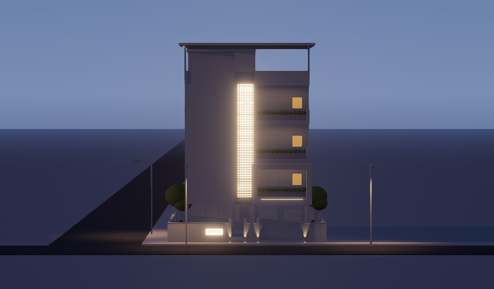
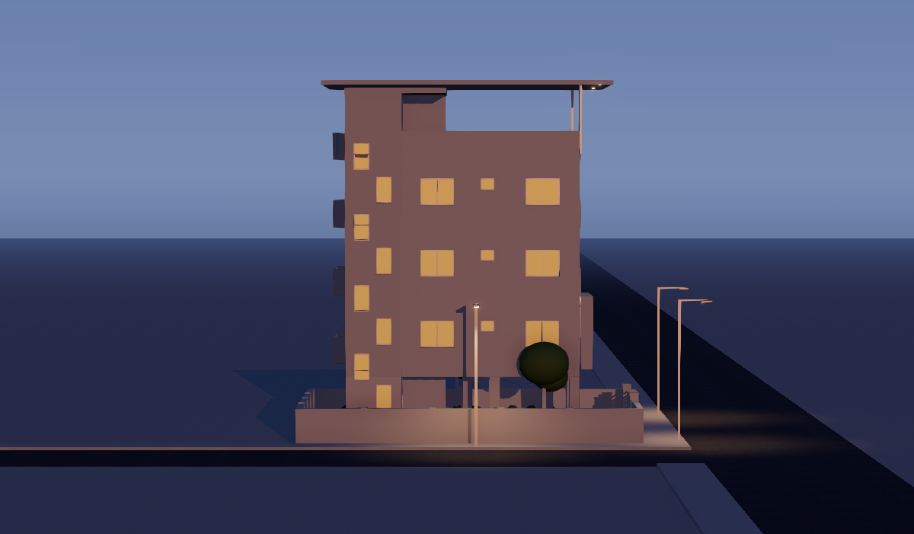
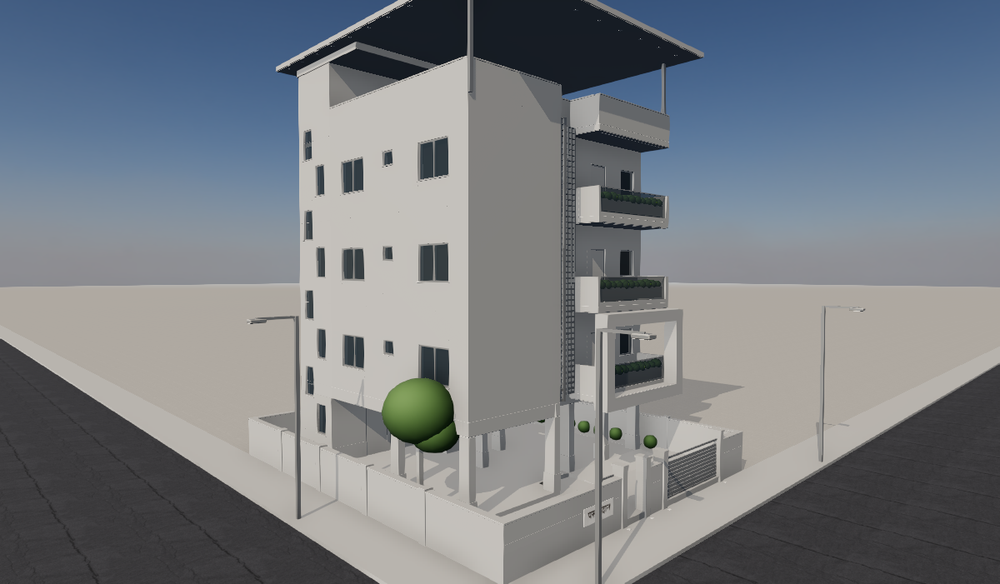
Moves
- Hero: Bronze jaali spine
- Supporting: Charcoal picture frame with planter
- Supporting: Dark fluted base
- Crown: Floating roof, walnut soffit
- Threshold: Travertine wall, charcoal band, slat gate, backlit nameplate
Approval flags (3)
- Floating roof, walnut soffit: projects 1.50 m on the road (south) side
Beyond the building line by 1.50 m (limit 0.75 m for chajjas / frames over the marginal open space); about 1.32 m of open space left to the boundary (assumed margins). [UDCPR 6.7(a): projection over marginal open space ≤ 0.75 m] - Floating roof, walnut soffit: narrows the side-road margin
The west open space is only about 1.32 m (assumed) before this 0.45 m projection. [Check the minimum side margin with the architect] - Floating roof, walnut soffit: new roof structure over the terrace
Needs posts or brackets and a structural check; rooftop projections around the building are limited (about 0.3 m) beyond what counts as a canopy. [UDCPR 6.7(e) rooftop projections; structural approval]
Quality gate: 9/10 (+1 to judge by eye)
- ✓ Hero nameable in three words “Bronze jaali spine”
- ✓ At most 3 supporting moves 2 supporting
- ✓ One element ≥ 450 mm proud, one recess ≥ 900 mm proud 1.50 m · recess 1.31 m (balcony pockets)
- ✓ ≤ 4 materials + glass stone, plaster, metal, wood
- ✓ Dark used as lines dark only on frames, fascias, gates
- ✓ Designed crown Floating roof, walnut soffit
- ✓ Designed threshold Travertine wall, charcoal band, slat gate, backlit nameplate
- ✓ Hero has its own light light built into the hero
- ? Asymmetric but balanced hero is central: judge by eye
- ✓ Distinct in grey closest in grey: C4 Quarter Arc (difference 7.4, needs ≥ 4)
C2 Soft Streamline Hero: Rounded wraparound bands
A smooth off-white house where every floor edge becomes a rounded band that wraps the corner, traced by a warm LED line. Study refs 3, 7, 5 (= files #2, #6, #4).
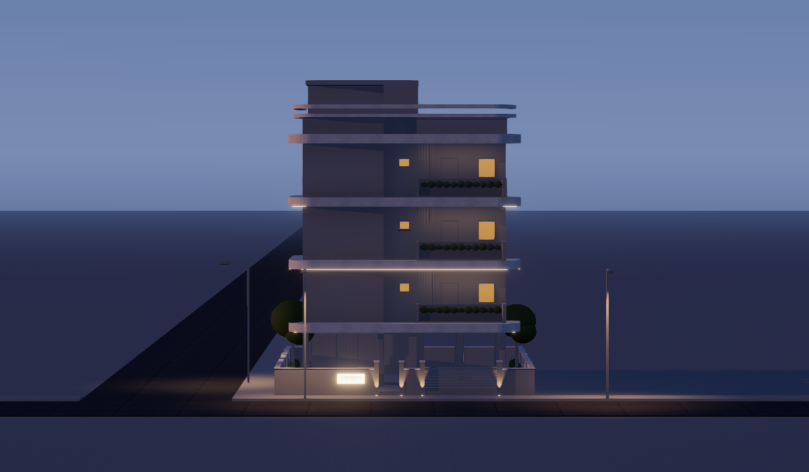
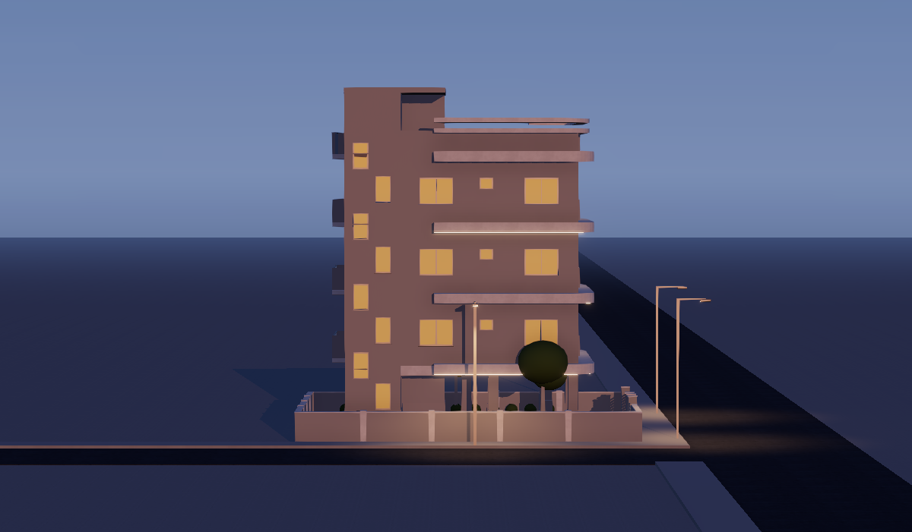
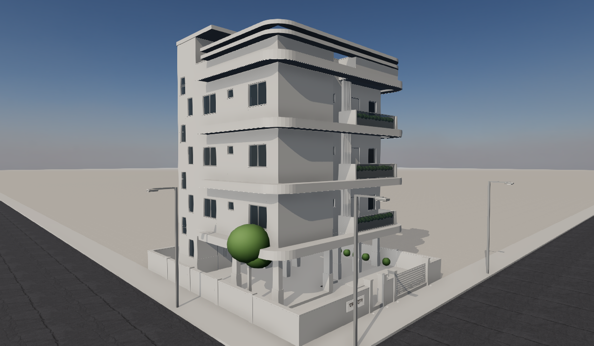
Moves
- Hero: Rounded wraparound bands
- Supporting: Slim white fins
- Supporting: Cascading planters
- Crown: Double cornice
- Threshold: Dark wall, wood slat gate, rounded nameplate
Approval flags (2)
- Rounded wraparound bands: narrows the side-road margin
The west open space is only about 1.32 m (assumed) before this 0.75 m projection. [Check the minimum side margin with the architect] - Rounded wraparound bands: rounded slab-edge bands
Extends the slab edges with rounded bands (RCC with curved shuttering or GRC shells): a structural and detailing change. [Curved slab edges / GRC shells that change structure]
Quality gate: 9/10 (+1 to judge by eye)
- ✓ Hero nameable in three words “Rounded wraparound bands”
- ✓ At most 3 supporting moves 2 supporting
- ✓ One element ≥ 450 mm proud, one recess ≥ 900 mm proud 0.75 m · recess 1.31 m (balcony pockets)
- ✓ ≤ 4 materials + glass plaster, wood, stone
- ✓ Dark used as lines dark only on frames, fascias, gates
- ✓ Designed crown Double cornice
- ✓ Designed threshold Dark wall, wood slat gate, rounded nameplate
- ✓ Hero has its own light light built into the hero
- ? Asymmetric but balanced hero is central: judge by eye
- ✓ Distinct in grey closest in grey: C4 Quarter Arc (difference 9.5, needs ≥ 4)
C3 Squircle Garden Hero: Nested squircle frames
Two soft rounded-rectangle frames: one wraps the upper floors, one pushes forward around the first-floor balcony. Study refs 4, 11, 9 (= files #3, #10, #8).
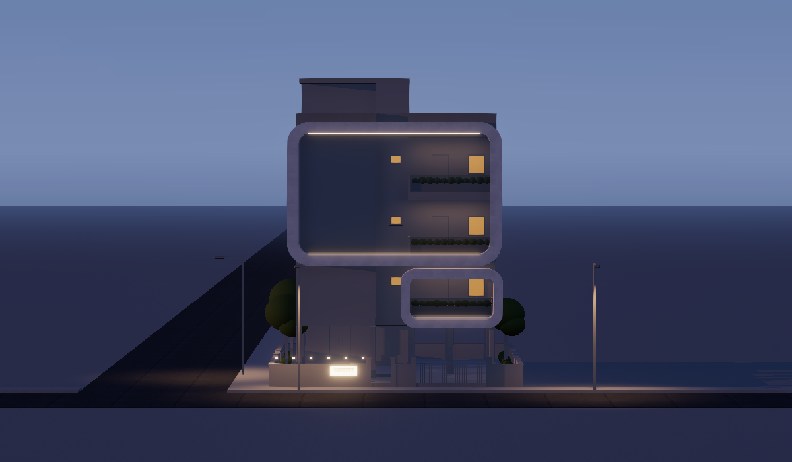
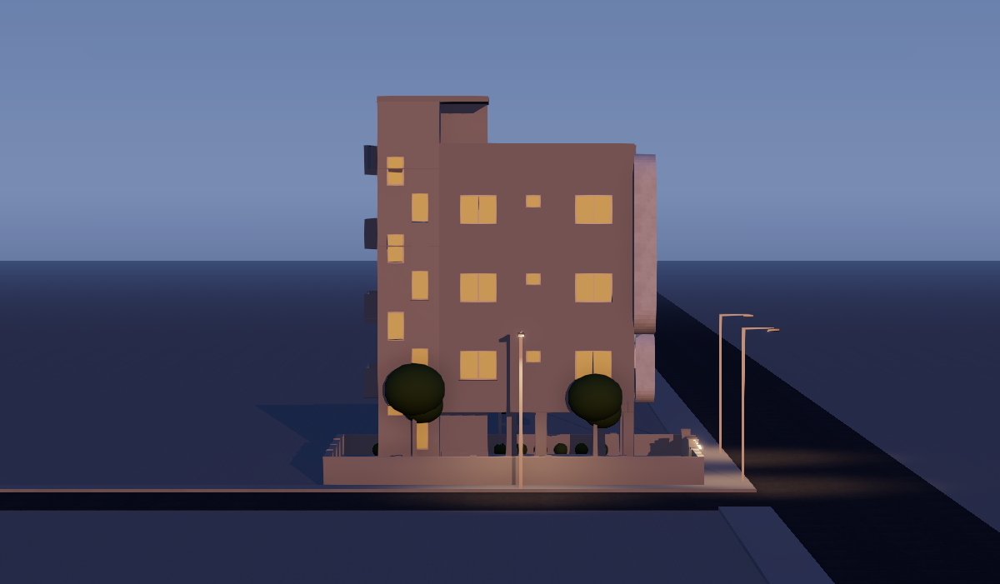
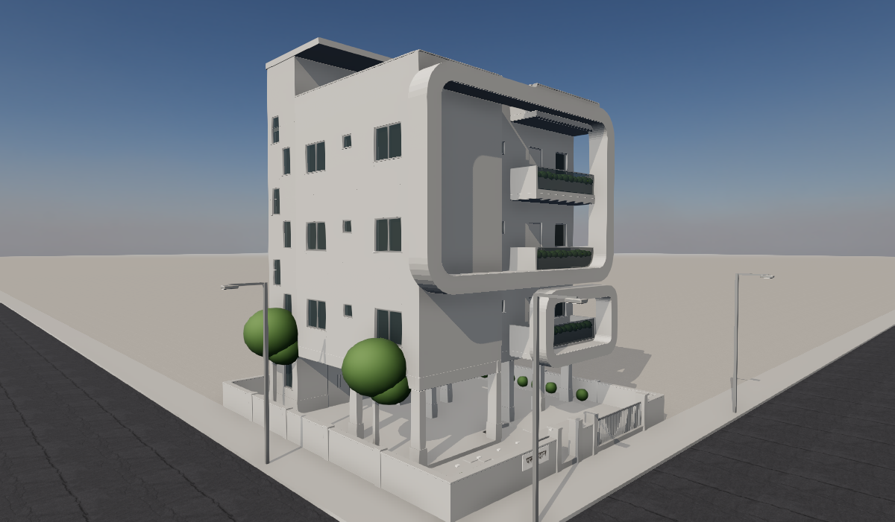
Moves
- Hero: Nested squircle frames
- Supporting: Projecting balcony squircle
- Supporting: Grey board cladding
- Crown: Rounded top of the frame
- Threshold: Low wall, stone planters, stepping stones
Approval flags (3)
- Nested squircle frames: projects 0.90 m on the road (south) side
Beyond the building line by 0.90 m (limit 0.75 m for chajjas / frames over the marginal open space); about 1.92 m of open space left to the boundary (assumed margins). [UDCPR 6.7(a): projection over marginal open space ≤ 0.75 m] - Nested squircle frames: narrows the side-road margin
The west open space is only about 1.32 m (assumed) before this 0.45 m projection. [Check the minimum side margin with the architect] - Projecting balcony squircle: projects 1.10 m on the road (south) side
Beyond the building line by 1.10 m (limit 0.75 m for chajjas / frames over the marginal open space); about 1.72 m of open space left to the boundary (assumed margins). [UDCPR 6.7(a): projection over marginal open space ≤ 0.75 m]
Quality gate: 9/10 (+1 to judge by eye)
- ✓ Hero nameable in three words “Nested squircle frames”
- ✓ At most 3 supporting moves 2 supporting
- ✓ One element ≥ 450 mm proud, one recess ≥ 900 mm proud 1.10 m · recess 1.31 m (balcony pockets)
- ✓ ≤ 4 materials + glass plaster, wood, stone
- ✓ Dark used as lines dark only on frames, fascias, gates
- ✓ Designed crown Rounded top of the frame
- ✓ Designed threshold Low wall, stone planters, stepping stones
- ✓ Hero has its own light light built into the hero
- ? Asymmetric but balanced hero is central: judge by eye
- ✓ Distinct in grey closest in grey: C4 Quarter Arc (difference 6.7, needs ≥ 4)
C4 Quarter Arc Hero: Quarter arc frame
One huge white arc rises from the ground at the road corner and sweeps over the top, holding a ledgestone wall and wood slats. Study refs 10, 11, 5 (= files #9, #10, #4).
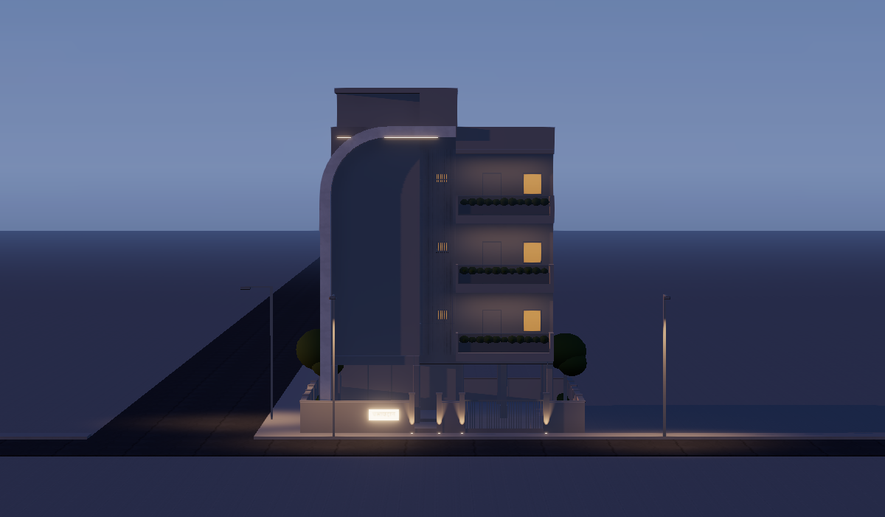
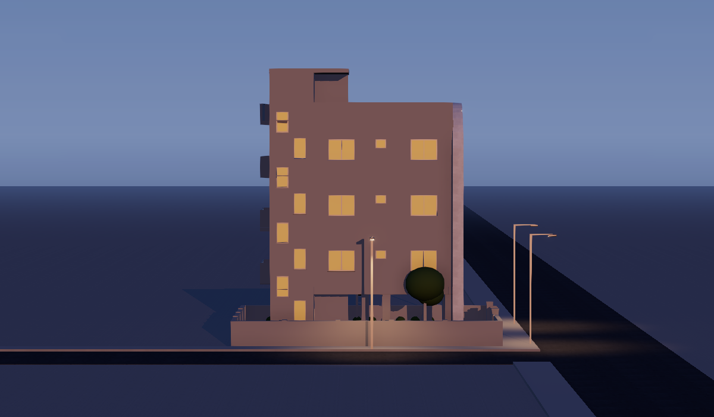
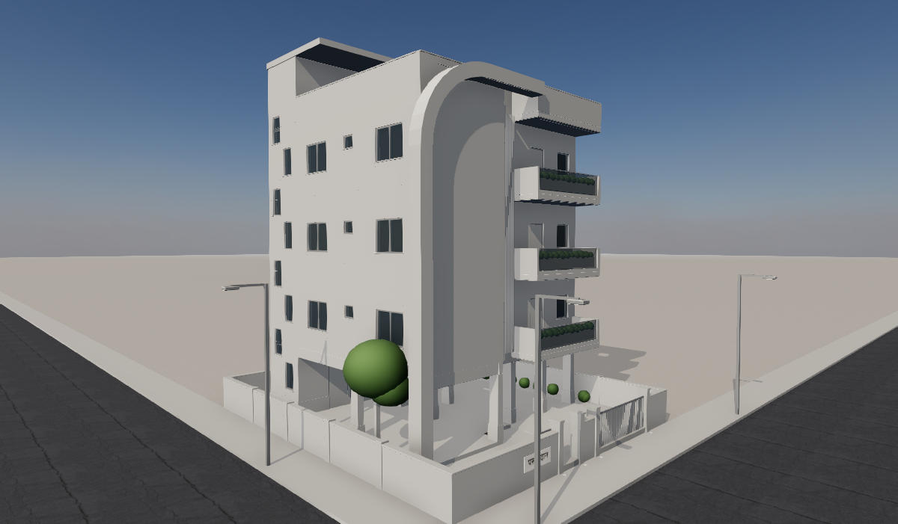
Moves
- Hero: Quarter arc frame
- Supporting: Ledgestone wall inside the arc
- Supporting: Wood slat panel
- Supporting: Balcony planters
- Crown: Arc sweeps over the parapet
- Threshold: White pillars with light slots, black gate
Approval flags (2)
- Quarter arc frame: narrows the side-road margin
The west open space is only about 1.32 m (assumed) before this 0.50 m projection. [Check the minimum side margin with the architect] - Quarter arc frame: stands on the ground in front of the building
Part of this move reaches down into the marginal open space; supports there are usually not allowed. [UDCPR 6.7(k): no supporting columns in the required front margin]
Quality gate: 10/10
- ✓ Hero nameable in three words “Quarter arc frame”
- ✓ At most 3 supporting moves 3 supporting
- ✓ One element ≥ 450 mm proud, one recess ≥ 900 mm proud 0.60 m · recess 1.31 m (balcony pockets)
- ✓ ≤ 4 materials + glass plaster, stone, wood
- ✓ Dark used as lines dark only on frames, fascias, gates
- ✓ Designed crown Arc sweeps over the parapet
- ✓ Designed threshold White pillars with light slots, black gate
- ✓ Hero has its own light light built into the hero
- ✓ Asymmetric but balanced hero 2.5 m off-centre (balance: judge by eye)
- ✓ Distinct in grey closest in grey: C5 Brass and Lotus (difference 5.6, needs ≥ 4)
C5 Brass and Lotus Hero: Portal crown pergola
A calm cream house crowned by a thick portal frame and a teak pergola with brass lanterns; a lotus jaali gate and a brass Devanagari nameplate welcome you. Study refs 1, 2 (= files #0, #1).
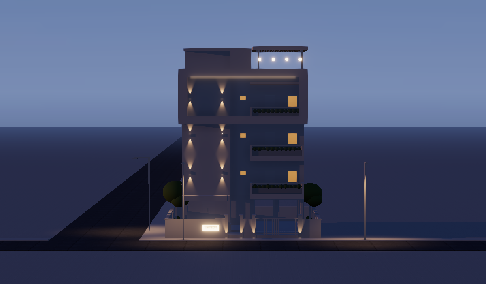
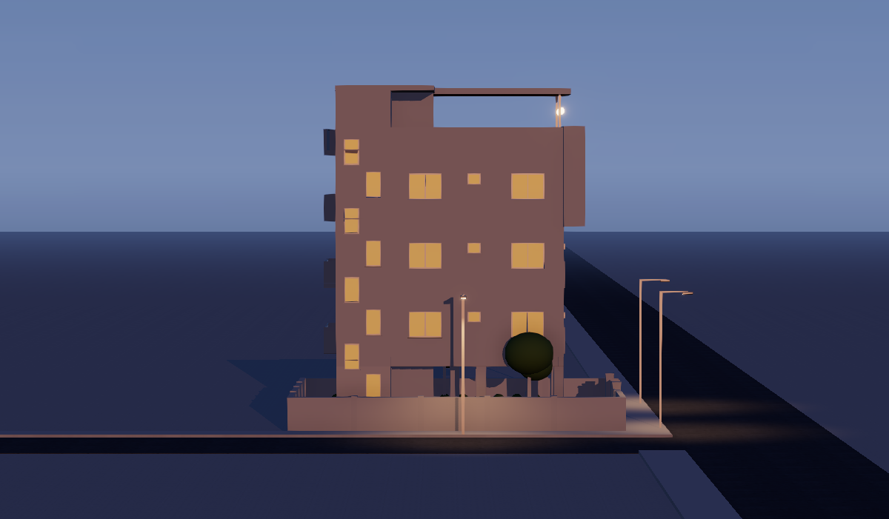
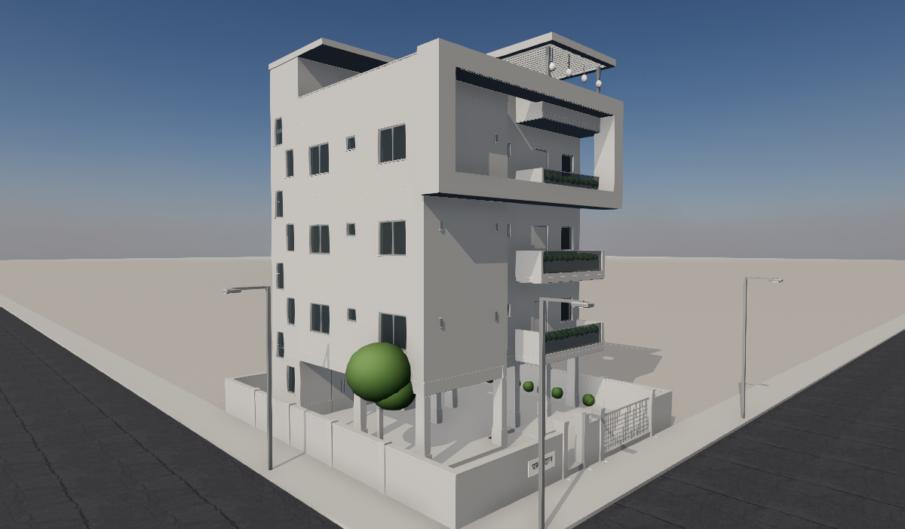
Moves
- Hero: Portal crown pergola
- Supporting: Cascading balcony plants
- Supporting: Dark teak entrance wall
- Crown: Teak pergola with brass lanterns
- Threshold: Black granite-look wall, lotus jaali gate, brass nameplate
Approval flags (3)
- Portal crown pergola: projects 1.00 m on the road (south) side
Beyond the building line by 1.00 m (limit 0.75 m for chajjas / frames over the marginal open space); about 1.82 m of open space left to the boundary (assumed margins). [UDCPR 6.7(a): projection over marginal open space ≤ 0.75 m] - Portal crown pergola: narrows the side-road margin
The west open space is only about 1.32 m (assumed) before this 0.25 m projection. [Check the minimum side margin with the architect] - Teak pergola with brass lanterns: new roof structure over the terrace
Needs posts or brackets and a structural check; rooftop projections around the building are limited (about 0.3 m) beyond what counts as a canopy. [UDCPR 6.7(e) rooftop projections; structural approval]
Quality gate: 9/10 (+1 to judge by eye)
- ✓ Hero nameable in three words “Portal crown pergola”
- ✓ At most 3 supporting moves 2 supporting
- ✓ One element ≥ 450 mm proud, one recess ≥ 900 mm proud 1.00 m · recess 1.31 m (balcony pockets)
- ✓ ≤ 4 materials + glass plaster, wood, stone
- ✓ Dark used as lines dark only on frames, fascias, gates
- ✓ Designed crown Teak pergola with brass lanterns
- ✓ Designed threshold Black granite-look wall, lotus jaali gate, brass nameplate
- ✓ Hero has its own light light built into the hero
- ? Asymmetric but balanced hero is central: judge by eye
- ✓ Distinct in grey closest in grey: C4 Quarter Arc (difference 5.6, needs ≥ 4)
C6 Taupe and Flute Hero: Taupe boxes, fluted backdrop
Two thick taupe boxes float in front of a charcoal fluted backdrop, under an angled roof; one arched window cuts the dark wall. Study refs 8, 12 (= files #7, #11).
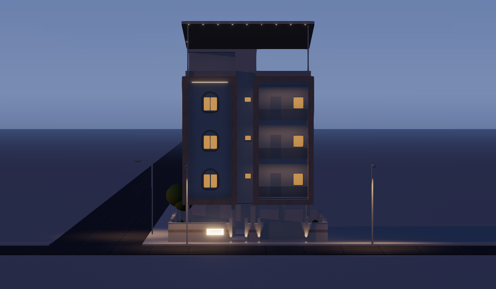
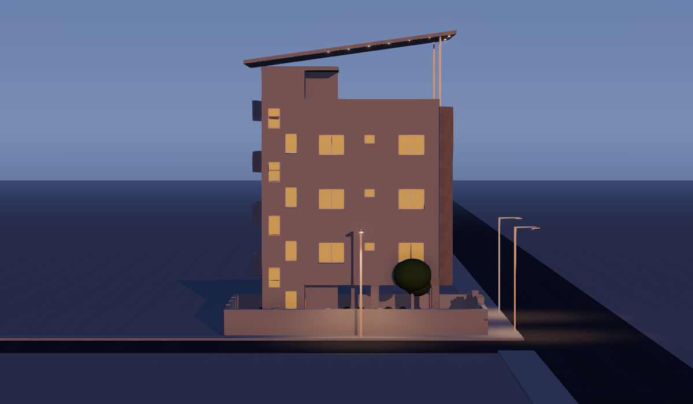
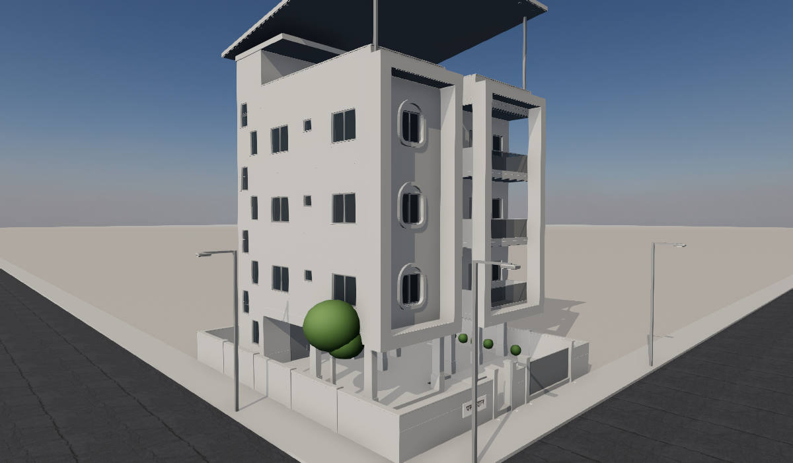
Moves
- Hero: Taupe boxes, fluted backdrop
- Supporting: Second taupe box
- Supporting: One arched window
- Crown: Angled roof
- Threshold: Dark wall with taupe band, black gate, dark paving
Approval flags (6)
- Taupe boxes, fluted backdrop: projects 0.80 m on the road (south) side
Beyond the building line by 0.80 m (limit 0.75 m for chajjas / frames over the marginal open space); about 2.02 m of open space left to the boundary (assumed margins). [UDCPR 6.7(a): projection over marginal open space ≤ 0.75 m] - Taupe boxes, fluted backdrop: narrows the side-road margin
The west open space is only about 1.32 m (assumed) before this 0.25 m projection. [Check the minimum side margin with the architect] - Angled roof: projects 1.00 m on the road (south) side
Beyond the building line by 1.00 m (limit 0.75 m for chajjas / frames over the marginal open space); about 1.82 m of open space left to the boundary (assumed margins). [UDCPR 6.7(a): projection over marginal open space ≤ 0.75 m] - Angled roof: narrows the side-road margin
The west open space is only about 1.32 m (assumed) before this 0.30 m projection. [Check the minimum side margin with the architect] - Angled roof: new roof structure over the terrace
Needs posts or brackets and a structural check; rooftop projections around the building are limited (about 0.3 m) beyond what counts as a canopy. [UDCPR 6.7(e) rooftop projections; structural approval] - New window on the road-side wall (master bedroom)
A 1.2 m wide window in the blank south wall of the master bedroom (sill 0.9 m, head 2.1 m), on every floor. Cross-ventilation with the west window; the name sign moves up. [New or resized opening]
Quality gate: 10/10
- ✓ Hero nameable in three words “Taupe boxes, fluted backdrop”
- ✓ At most 3 supporting moves 2 supporting
- ✓ One element ≥ 450 mm proud, one recess ≥ 900 mm proud 1.00 m · recess 1.31 m (balcony pockets)
- ✓ ≤ 4 materials + glass plaster, wood, stone
- ✓ Dark used as lines dark only on frames, fascias, gates
- ✓ Designed crown Angled roof
- ✓ Designed threshold Dark wall with taupe band, black gate, dark paving
- ✓ Hero has its own light light built into the hero
- ✓ Asymmetric but balanced hero 3.2 m off-centre (balance: judge by eye)
- ✓ Distinct in grey closest in grey: C1 Travertine Lantern (difference 10.7, needs ≥ 4)
C7 Deccan Veranda Hero: Tilted roof frame
A tilted, slatted roof frame opens to the road like a monsoon umbrella over deep shaded verandas; a split-face basalt spine runs up the stair tower. Study refs 6, 12 (= files #5, #11).
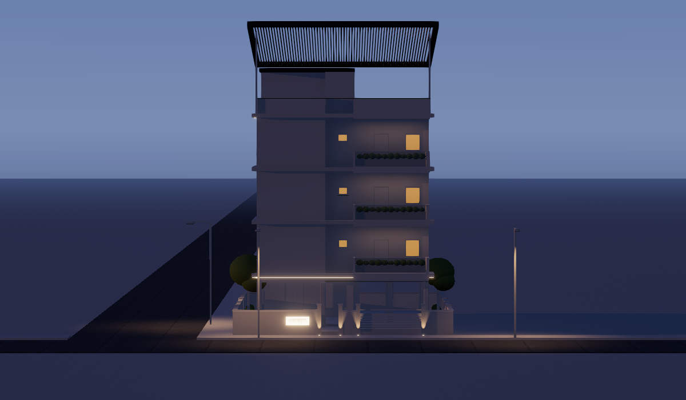
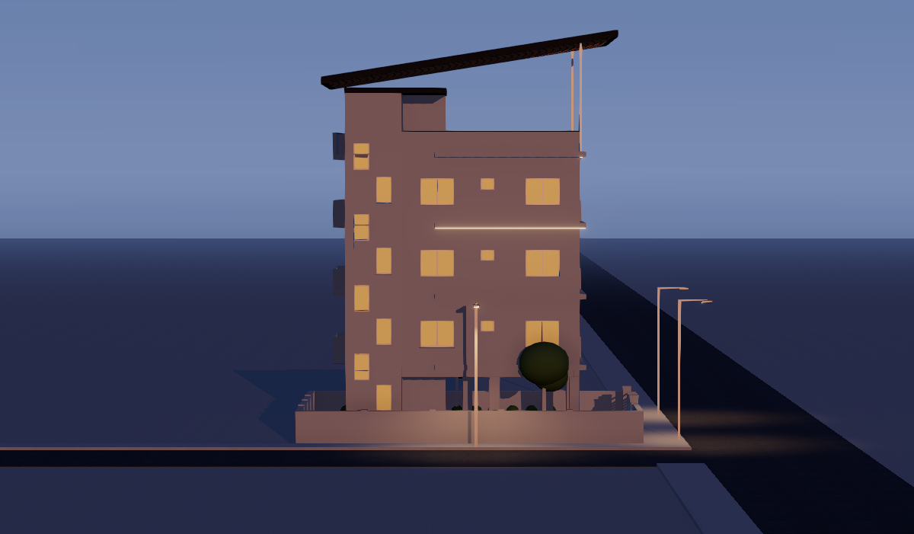
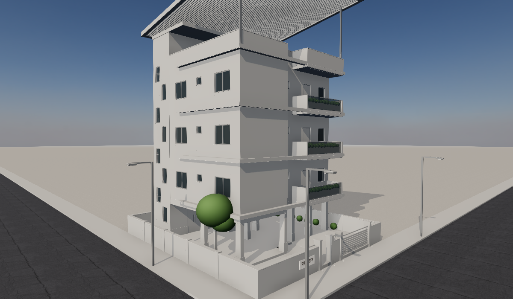
Moves
- Hero: Tilted roof frame
- Supporting: Charcoal slab bands with LED
- Supporting: Basalt stair-tower spine
- Supporting: Parapet planters
- Crown: Slatted tilted roof
- Threshold: Basalt wall, cream coping, wood slat gate
Approval flags (5)
- Tilted roof frame: projects 1.70 m on the road (south) side
Beyond the building line by 1.70 m (limit 0.75 m for chajjas / frames over the marginal open space); about 1.12 m of open space left to the boundary (assumed margins). [UDCPR 6.7(a): projection over marginal open space ≤ 0.75 m] - Tilted roof frame: narrows the side-road margin
The west open space is only about 1.32 m (assumed) before this 0.50 m projection. [Check the minimum side margin with the architect] - Tilted roof frame: new roof structure over the terrace
Needs posts or brackets and a structural check; rooftop projections around the building are limited (about 0.3 m) beyond what counts as a canopy. [UDCPR 6.7(e) rooftop projections; structural approval] - Charcoal slab bands with LED: narrows the side-road margin
The west open space is only about 1.32 m (assumed) before this 0.30 m projection. [Check the minimum side margin with the architect] - Charcoal slab bands with LED: projecting slab-edge bands
Extends the slab edges with bands (RCC or GRC shells): a structural and detailing change. [Curved slab edges / GRC shells that change structure]
Quality gate: 9/10 (+1 to judge by eye)
- ✓ Hero nameable in three words “Tilted roof frame”
- ✓ At most 3 supporting moves 3 supporting
- ✓ One element ≥ 450 mm proud, one recess ≥ 900 mm proud 1.70 m · recess 1.31 m (balcony pockets)
- ✓ ≤ 4 materials + glass plaster, stone, wood
- ✓ Dark used as lines dark only on frames, fascias, gates
- ✓ Designed crown Slatted tilted roof
- ✓ Designed threshold Basalt wall, cream coping, wood slat gate
- ✓ Hero has its own light facade lighting layer
- ? Asymmetric but balanced hero is central: judge by eye
- ✓ Distinct in grey closest in grey: C4 Quarter Arc (difference 5.6, needs ≥ 4)